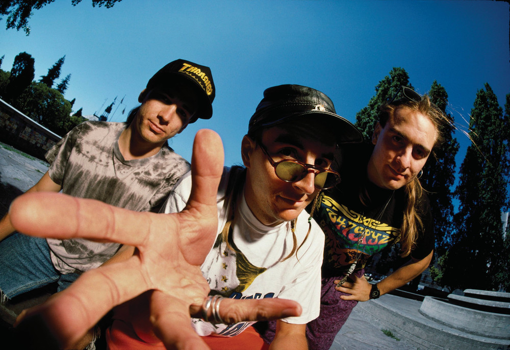

Primus

Biografia
Primus é uma banda de Funk Metal formada pelo Baixista/Vocalista Les Claypool, Guitarrista Larry "Ler" LaLonde e o baterista Tim "Herb" Alexander. A banda foi formada em 1984 idealizada pelo baixista, seguida da entrada do guitarrista e o baterista para completar. Obteve grande sucesso inicial e em seu segundo albúm conseguiu o aclamado disco de ouro.
Sobre o Artista:

Albuns
Localização
O estúdio da banda atualmente se encontra em São Francisco - Califórnia - EUA